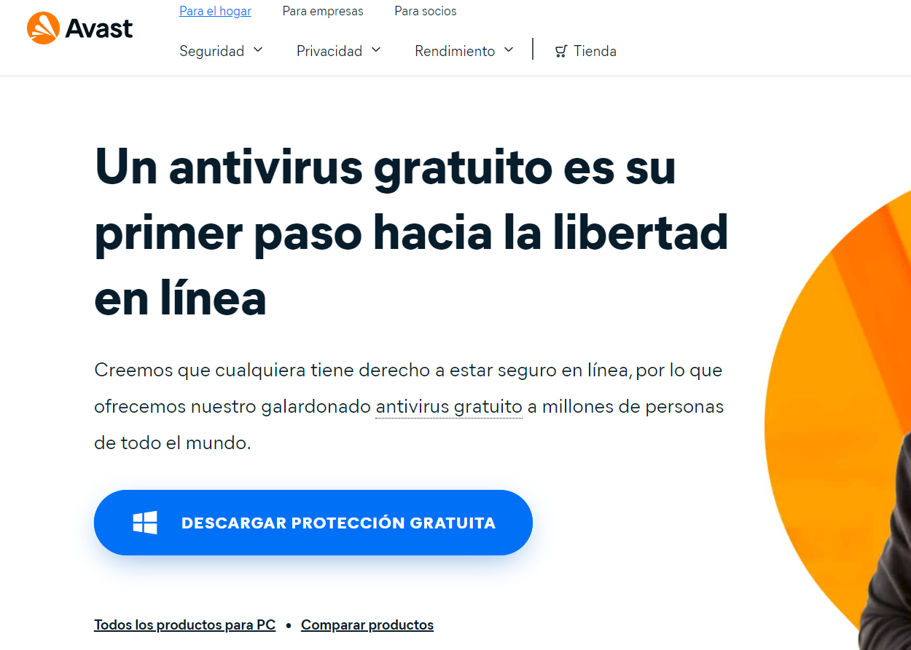
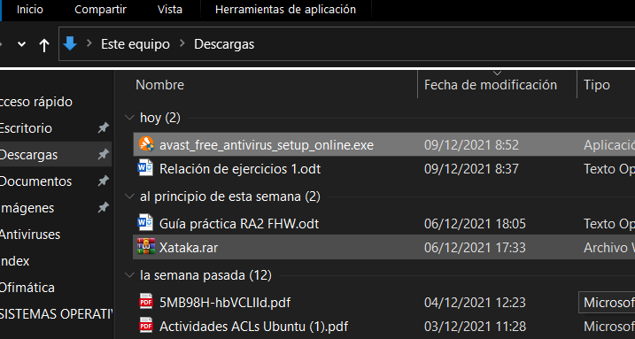
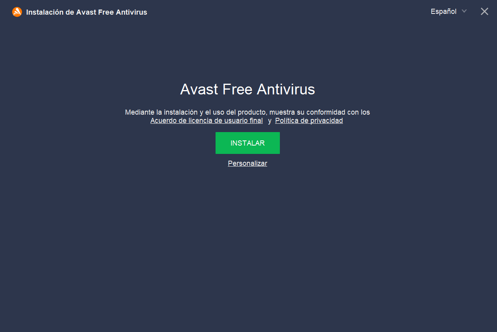
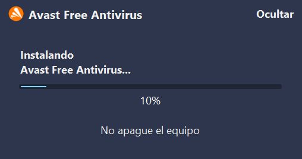

Lo primero que debemos hacer es descargar el programa desde su página web y dar click en "DESCARGAR PROTECCIÓN GRATUITA"
Le aparecerá una ventana emergente donde podrá elegir la localización del instalador de Avast en su dispositivo. Seguidamente, le daremos doble click al archivo descargado para iniciar la instalación
Aparecerá la siguiente ventana en la cual podemos elegir la instalación predeterminada o personalizada (la cual nos permite agregar o quitar componentes del programa). En este tutotiral elegiré la opción predeterminada
Por último, le daremos al botón "INSTALAR" y Avast empezará a instalarse automáticamente en nuestro ordenador. Si queremos modificar la ruta de instalación, debemos elegir la instaiacíon personalizada.
Si posees un sistema operativo Windows, tendrás por defecto instalado uno de los mejores antivirus que existen actualmente a nivel usuario. Este sofisticado antivirus contiene protección contra virus y amenzas en tiempo real, protección de cuentas, cortafuegos, control de aplicaciones, seguridad de hardware... Todas estas funciones son completamente gratuitas (a diferencia de Avast, en la cual debes comprar la versión premium si quieres disponer de ciertas utilidades). Mi recomendación personal es que si tienes Windows Defender, no instales ningún antivirus, puesto que no es necesario si va a trabajar a nivel usuario.